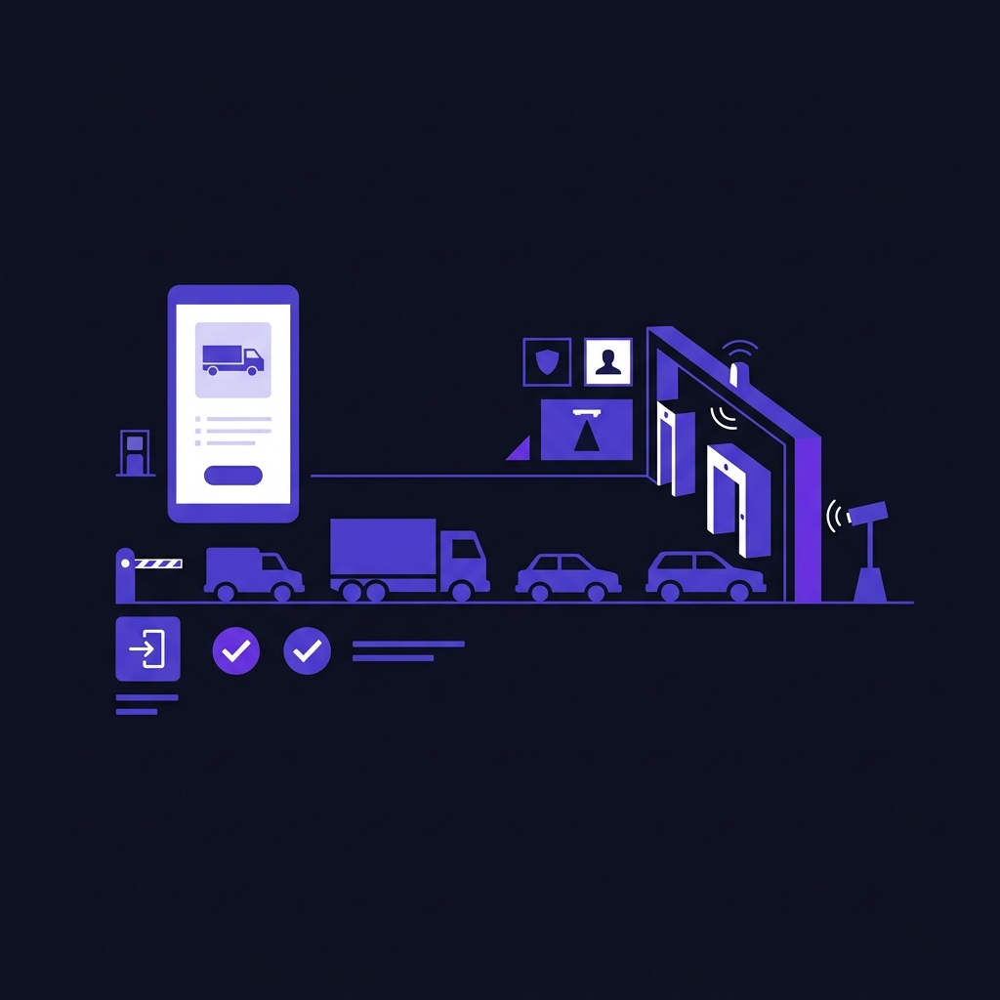

Industrial Gate
Operations
Designing faster verification and approval workflows for industrial entry and exit operations.

This project focused on improving vehicle verification, product validation, and approval workflows used at industrial plants.
Security teams were handling vehicle queues, material checks, and approvals manually under time pressure. The goal was to make the process faster, clearer, and less error-prone.
The existing workflow depended heavily on:
- manual verification,
- paper records,
- repeated coordination calls,
- and unclear approval visibility.
This created:
- slow vehicle processing,
- verification mistakes,
- delayed approvals,
- and operational confusion during high-volume activity.
The biggest issue appeared during product verification where speed and accuracy directly affected operational flow.
- Faster vehicle processing
- Improved tracking accuracy
- Reduced approval delays
- Better operational visibility
- Lower manual verification effort
This project reinforced that operational UX is about helping users make fast and accurate decisions under pressure.
In industrial environments, clarity and speed matter more than visual complexity.
Wanna know more?
Happy to discuss the verification workflows, operational UX challenges, approval systems, or collaboration opportunities.
Email Me